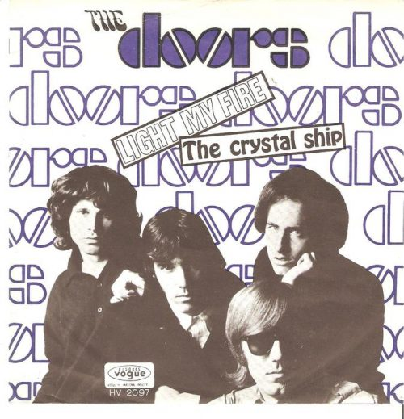
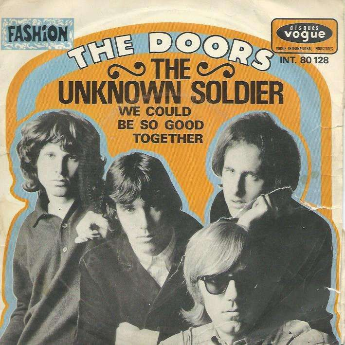
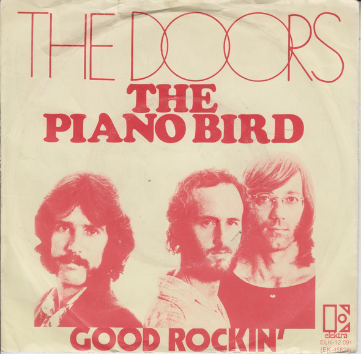
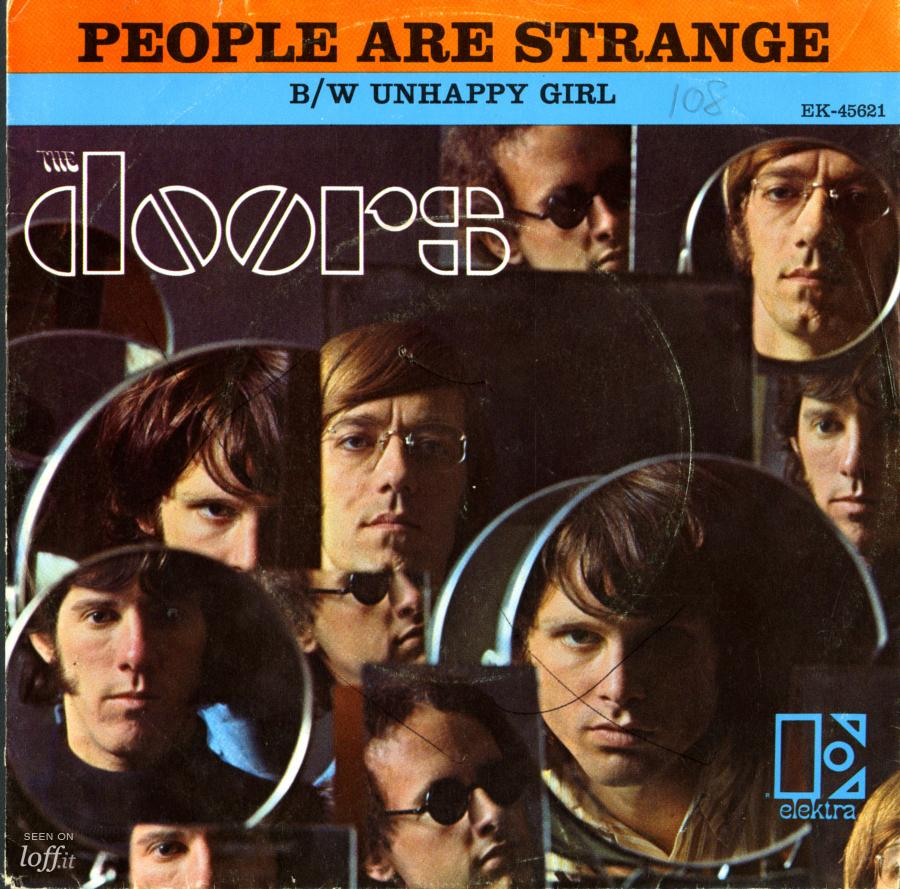
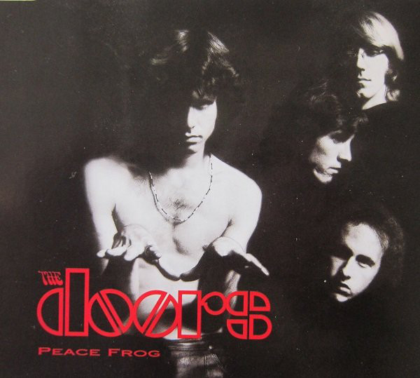
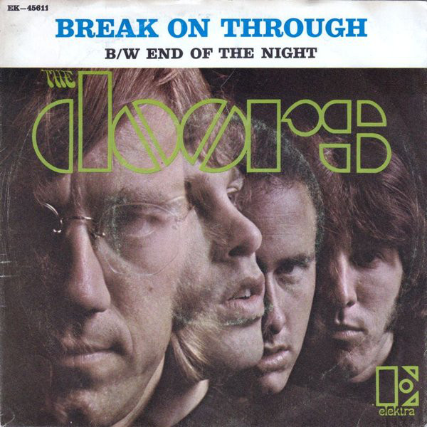
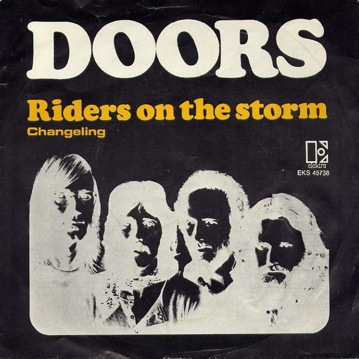
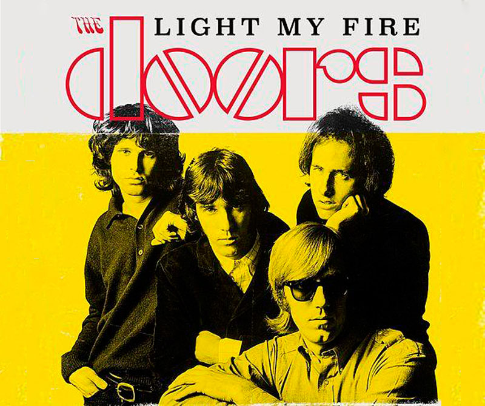
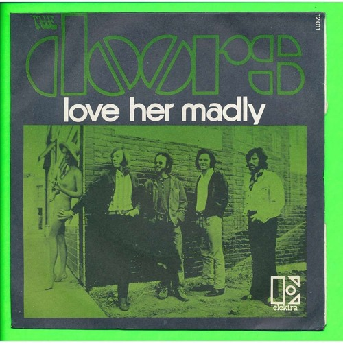
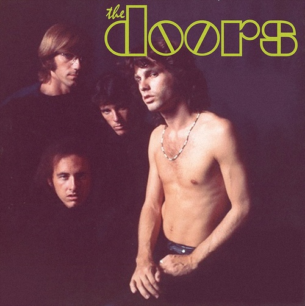

10. The Crystal Ship
Comenzando con el sensual canturreo de Jim Morrison y llegando al clímax con el contundente interludio de piano de Ray Manzarek, “The Crystal Ship” evita cualquier tipo de convenciones del rock.
Las letras nebulosas (cuatro cuartetos de rima suelta) brindan una despedida alucinante a un amante con un acompañamiento escaso en lo que es uno de los mejores intentos de los Doors de fusionar poesía y música.

9. The Unknown Soldier
The Doors pegan un collage sónico que se debe tanto a las adiciones extra musicales como a la propia música escrita. Entre los disparos, las multitudes rugientes y las campanas de la victoria, la voz de Morrison va desde un susurro hasta un grito estruendoso mientras contrasta las realidades de "desayunar, donde se leen las noticias" y una vida en la que "una bala golpea el casco. cabeza."

8. The Piano Bird
La sordidez mugrienta gotea de las notas en una sórdida historia de la parte más vulnerable de la vida, oscuramente coloreada por la inquietante instrumentación.
Robby Krieger muestra algunos de sus mejores juegos con sus lamidas y ráfagas de diapositivas que acechan en la esquina de cada verso.

7. People Are Strange
"La gente es extraña, cuando eres un extraño". Las primeras líneas ponen al descubierto la percepción que tiene el forastero de la vida contada por una banda que rondaba las afueras de la sociedad en general. La voz inquietante de Morrison y las letras oprimidas ensombrecen sus revelaciones improvisadas. Junto con el tintineante piano de Manzarek, la canción suena más como un viejo lamento occidental tocado desde un lúgubre salón que como un éxito de una de las bandas más populares de los años 60.

6. Peace Frog
Desde los funky golpes de guitarra hasta la inolvidable línea de bajo que empuja la pista hacia adelante, “Peace Frog” es uno de los ritmos más contagiosos de The Doors. Los versos, en desacuerdo con el título, son un collage lírico de algunas de las imágenes poéticas más violentas de Morrison y comentarios políticos no tan sutiles.

5. Break On Through
Esta fue la primera canción del primer álbum de The Doors y también su primer sencillo. Tuvo algo de difusión en las estaciones de radio de Los Ángeles después de que sus amigos y fanáticos siguieran solicitándolo.
En un episodio de Los Simpsons , Krusty el payaso canta esto cuando muestra a la multitud una cinta de él cuando era más joven.

4. Riders On The Storm
En lo que muchos consideran la obra maestra de The Doors, el piano de Manzarek interpreta el papel de la tormenta titular mientras Morrison entrega su tratado sobre la condición humana. A diferencia de muchas otras canciones donde las payasadas vocales de Morrison resaltan la letra, aquí su moderación sobria refuerza la gravedad de su mensaje sombrío y escalofriante: que todos somos jinetes en la tormenta.

3. Light My Fire
El sencillo más vendido y quizás la melodía más reconocible en el catálogo de la banda, “Light My Fire” anunció la llegada de la banda y todo su atractivo sexual oscuro y peligroso. Escrita en gran parte por Krieger, la versión completa de siete minutos de esta joya del pop presenta las deslumbrantes claves de Manzarek y los estilos flamencos de Krieger a medida que se expanden más allá de los límites del rock y se adentran en el jazz.

2. Love Her Madly
Morrison incesantemente plantea la pregunta a lo largo de esta alegre canción de lujuria y anhelo. Impulsado por tintineos de acordes de piano y resaltado por un solo de guitarra discreto, el cambio menor / mayor de verso a coro es una pequeña sorpresa, pero funciona como un ejemplo perfecto de la composición creativa y tensa de The Doors.

1. The End
Quizás la canción más famosa sobre la muerte en la historia del rock, “The End” no puede decidir si quiere ser una balada, un poema o una jam session extendida, por lo que decide ser las tres. La extraña y excéntrica introducción a la guitarra de Krieger conduce a una secuencia de inquietantes imágenes líricas e inquietantes secciones instrumentales que se mantienen unidas por una actuación de Densmore a lo largo de la historia. Muchas canciones de la época abordaron temas tabú, a menudo sorprendiendo y enojando a las autoridades, pero la profundidad y oscuridad de “The End” no tiene rival hasta el día de hoy.